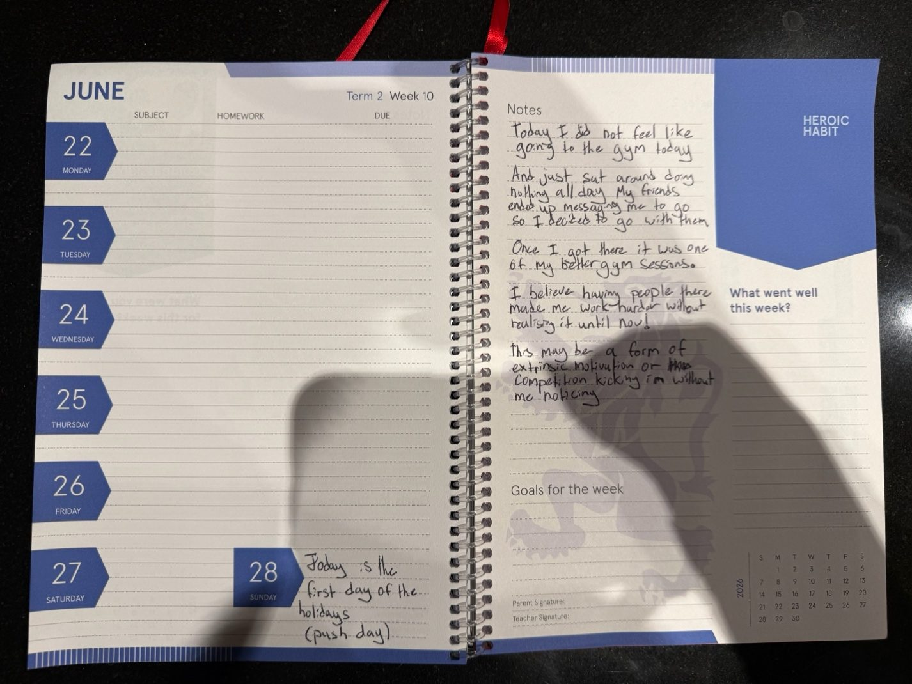
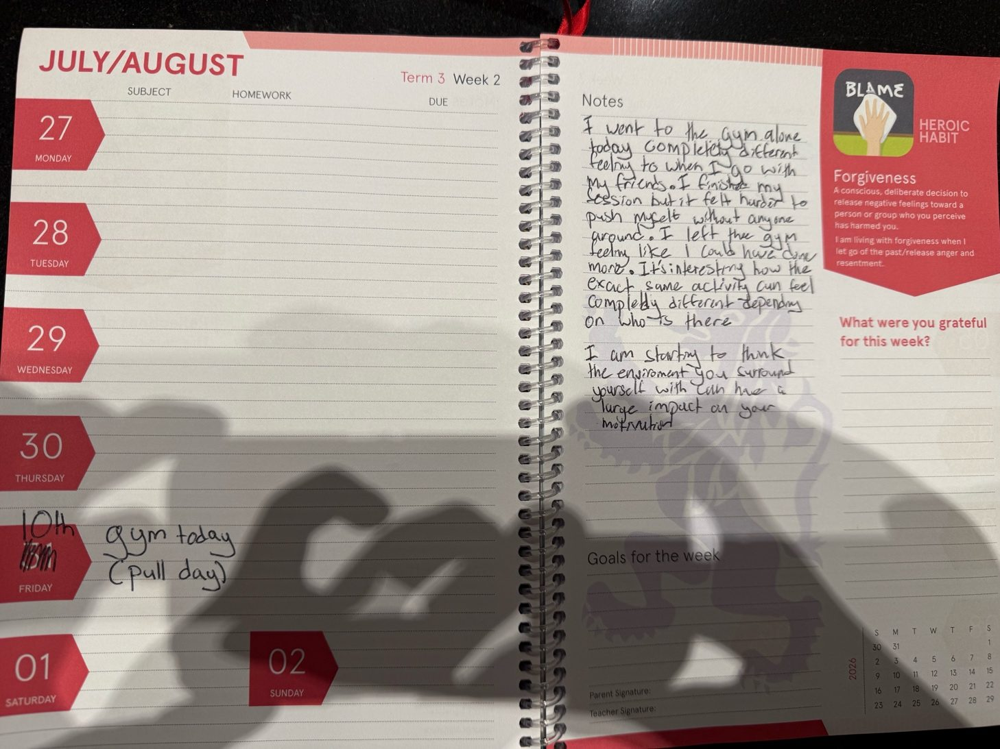
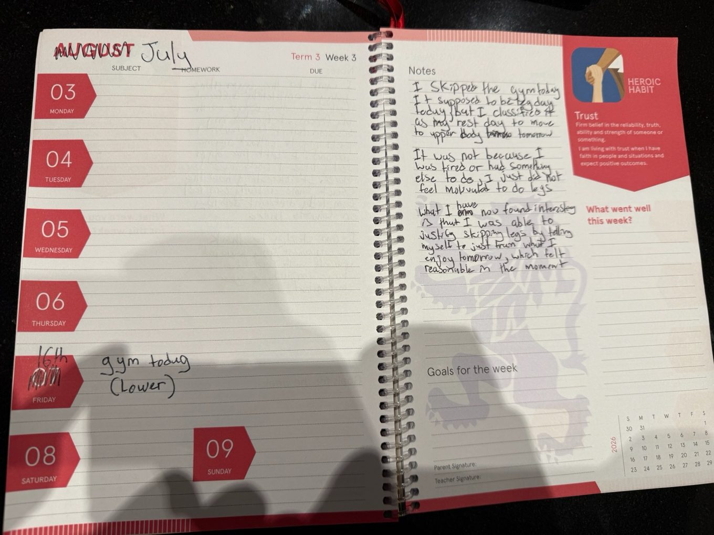
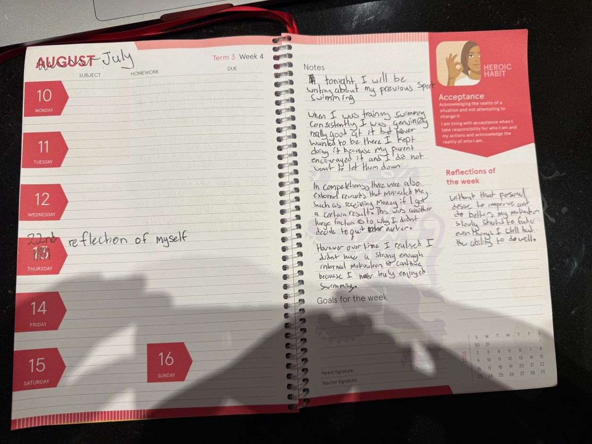

Four entries from my diary, and a piece about feeling lost.
Why a diary
A survey tells me what 19 people say about their motivation afterwards. A diary lets me watch my own motivation as it happens. I wrote four entries over the holidays in a school diary. The wording below is a transcription of my handwriting.

Diary entry 1, 22 June.
Entry 1: friends and the gym
Today I did not feel like going to the gym today and just sat around doing nothing all day. My friends ended up messaging me to go so I decided to go with them. Once I got there it was one of my better gym sessions. I believe having people there made me work harder without realising it until now. This may be a form of extrinsic motivation or competition kicking in without me noticing.
This entry shows motivation does not always come from within. I had no plans to go until my friends texted me. Once I was there I had a really good session, so the motivation came from outside but the result was just as good as days when I push myself to go alone.

Diary entry 2.
Entry 2: the same workout, alone
I went to the gym alone today, completely different feeling to when I go with my friends. I finished my session but it felt harder to push myself without anyone around. I left the gym feeling like I could have done more. It's interesting how the exact same activity can feel completely different depending on who is there. I am starting to think the environment you surround yourself with can have a large impact on your motivation.
Going alone felt completely different even though I was doing the same thing. I got through the session but felt like I had more left. The people around you are doing something to your motivation without you noticing. That is relatedness.

Diary entry 3.
Entry 3: skipping leg day
I skipped the gym today. It was supposed to be leg day today, but I classified it as my rest day to move to upper body tomorrow. It was not because I was tired or had something else to do, I just did not feel motivated to do legs. What I have now found interesting is that I was able to justify skipping legs by telling myself to just train what I enjoy tomorrow, which felt reasonable in the moment.
What I found most interesting was not that I skipped but how I justified it. I called it a rest day, and in the moment that felt perfectly reasonable. Looking back, I was willing to skip partly because leg day is not something I enjoy. It is much easier to talk yourself out of something when you do not enjoy it in the first place.

Diary entry 4, a reflection on swimming.
Entry 4: swimming
Tonight I will be writing about my previous sport, swimming. When I was training swimming consistently I was genuinely really good at it but never wanted to be there. I kept doing it because my parents encouraged it and I did not want to let them down. In competitions there were also external rewards that motivated me, such as receiving money if I got a certain result. This was another large factor as to why I didn't decide to quit earlier. However over time I realised I didn't have a strong enough internal motivation to continue because I never truly enjoyed swimming. Reflections of the week: without that personal desire to improve and do better, my motivation slowly started to fade even though I still had the ability to do well.
This was the entry I got the most out of. I was never really there for myself. For a while money and my parents' encouragement was enough, but because the motivation never came from within me, I slowly got worse and eventually stopped. Compare that to the gym, where even on days I do not feel like going I still care about getting better. It is the clearest example I have found in my own life of what happens when motivation comes purely from outside.
Looking across the four entries
My motivation changes a lot with the situation. Entry 1 showed outside motivation from friends can create a better result than going alone, and entry 2 confirmed it. Entry 3 showed that low motivation does not always feel obvious, because the brain is good at making excuses sound reasonable, and it is harder to push through something you do not enjoy. Entry 4 connected everything to my own life. Across all four the same question kept coming up, and it is the question behind this whole project: where does motivation come from, and what happens when it runs out?
The diary was meant to be fortnightly. It stopped after these four entries. I explain why on the process page.
On feeling lost
This is reflective writing, separate from the research. It is the most personal part of the site.
Recently I have felt incomplete, like I am not sure what to do. It is not sadness exactly. It is more like everything is nothing, and all you are left with is one thought: what is the meaning behind all of this?
It is something I think many other people have thought. Twenty years of being taught. Fifty years of working. If you are still alive, five or ten years at the end that are finally yours. Then nothing. Looking at it like that, a life stops looking like a life and starts looking like a sentence being served. I assume most people have had this thought and decided not to say it out loud.
The easy way out
There is a character in BoJack Horseman, Mr Peanutbutter, who is always cheerful. In one episode his philosophy comes out plainly: “The universe is a cruel, uncaring void. The key to being happy isn't a search for meaning. It's to just keep yourself busy with unimportant nonsense, and eventually, you'll be dead.” It is played as a joke, but it stuck with me for a long time. The show does not agree with him. Mr Peanutbutter is the character who examines nothing, and his optimism turns out to be a wall he has built to hide from the challenges he has faced. His happiness is genuine and also completely hollow.
What the research says instead
I went looking for evidence that happiness was the answer and found something more useful. I put that on the research page: hedonic adaptation, Frankl on meaning, the Harvard study on relationships, and the studies on gratitude and self-compassion.
Two conversations
At a school event a guest speaker said to stay in the present instead of living in the past or the future. Part of me thinks he is right. Most of what makes me feel lost is a future that has not happened yet. But presence is easy to recommend and hard to do when every adult you meet asks what you want to do after school.
The conversation that moved something was with my dad. I told him I thought everything was pointless.
That may be true, that everything is pointless, but that doesn't mean we give up. We should find what we love and what we care about.
My dad
He did not tell me I was wrong to feel it. He agreed that the universe does not hand you a reason, and said that is exactly why you have to choose one yourself. Camus (1942) makes almost the same argument in The Myth of Sisyphus. Ryan and Deci would call it autonomy.
Where this leaves me
Reading my diary back, the pattern is obvious. I was most motivated when I was with people and least motivated doing things I did not care about. Swimming, built on my parents' encouragement and external reward with nothing of my own underneath it, is the same story. Autonomy and relatedness were showing up in my own life before I had realised.
I do not think the answer to feeling lost is finding The Meaning. Looking for one fixed answer is part of what makes people feel lost. What I believe now is closer to this: we are on a journey, and the people we meet and the things that happen along the way shape who we become. Nobody owes you a reason for any of it. But we have free will, we get to choose what we do and who we become, and that at least means we are free.
What the research, my diary and one conversation with my dad seem to agree on is that meaning is not something you find. It is something that gets built, in the things you chose, the things you got better at, the people who were there for you, and the gratitude you are willing to feel for having them.
If any of this sounds like you, talking to someone you trust helps, and a school counsellor or a GP is a good place to start. In Australia you can also call Lifeline on 13 11 14 at any time.